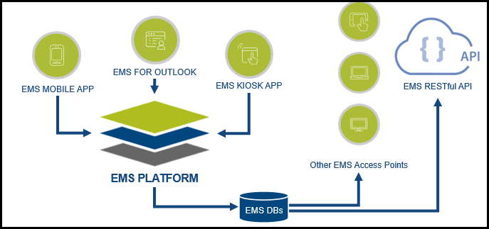

Legacy EMS Architecture
In June 2017, the EMS Mobile App was implemented with EMS Platform Services. As of January 2018, the EMS Kiosk App and EMS for Outlook have both been placed on the EMS Platform Services layer. In the future, all EMS applications will consume the Platform Services layer.
Current EMS Platform Services Architecture (January 2018)

For our clients and partners, EMS Platform Services provides a platform for faster, more straightforward custom integrations. Clients will experience a more valuable, consistent user experience across all EMS products. In addition, features and enhancements across all access points will experience faster turnaround times. Platform Services has empowered EMS to be a true enterprise solution.
See Also: Connect with EMS Platform Services